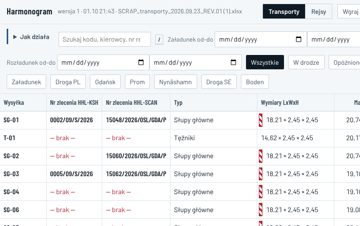
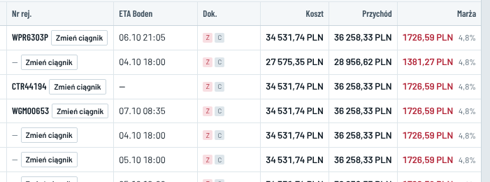
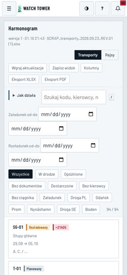
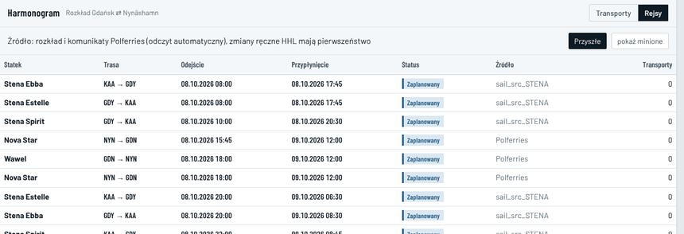

E30 · Harmonogram: kolumny, filtry, eksport, Rejsy · komputer i telefon
„Dziś” — zrzuty 08.10, 00:2x · „po zmianie” — kody, typy, wymiary, daty, tablice, kwoty i rejsy z bazy; kierowcy ukryci
Dziś
Komputer 1366 px · lewa część5 przycisków · 14 filtrów

Ta sama tabela po przewinięciu w prawo17 kolumn · 2013 px

„Zmień ciągnik” jest w każdym wierszu (okno przeglądarki). „Dok.” pokazuje tylko „Z” i „C”. Marża jest czerwona przy każdym transporcie (próg 18%). Dopisek pod tabelą mówi o kursie NBP, a kwoty liczy stały kurs 4,39 (E16).
Telefon 390 px

Pierwsza karta jest dopiero pod przyciskami, 4 polami dat i 14 filtrami.
Rejsysail_src_STENA

Tytuł „Rozkład Gdańsk ⇄ Nynäshamn”, a lista ma też Gdynię i Karlskronę oraz rejsy powrotne. W kolumnie „Transporty” wszędzie jest 0.
Fakty 08.10
- Rejsy w bazie: 250. Polferries ma rozkład do 09.01.2027, a Stena do 18.10.
- Rejs przypisany ma 1 transport (SG-24, wpis próbny z 01.10). SG-01 i SG-03 nie mają rejsu.
- Eksport XLSX i PDF zawsze zawiera 94 transporty, bez filtrów i bez wyboru kolumn. XLSX ma statusy po angielsku („PLANNED”) i nagłówki „L_m”, „Masa_t”. PDF pokazuje telefon kierowcy każdej firmie.
- Układ kolumn zapisuje się w przeglądarce. Na innym komputerze wraca układ domyślny.
Po zmianie · komputer 1366 px · HHL (obszar treści 1154 px obok menu)
Przygotowanie92
Załadunek0
Droga PL0
Port PL0
Prom0
Port SE0
Droga SE0
Plac Boden0
Dostarczone2
Rozliczenie0
HarmonogramPlik KSH: wersja 1 z 01.10, 21:43 · pominięto wiersze STANDARDTransportyRejsyKolumnyWięcej ▾
Szukaj: kod, nr zlecenia, kierowca, tablice
Załadunek: t40–t41 ▾Dostawa: wszystkie ▾
Opóźnione · 0Bez dokumentów · 92Bez kierowcy · 90Bez ciągnika · 90Anulowane · 0
20 z 94 · poniżej fragment
| Transport | Ładunek | Załadunek → dostawa | Status | Kierowca i zestaw | ETA Boden | Dokumenty | Przychód (EUR) |
|---|
| SG-01 · 0002/09/S/2026 | Słupy główne · 7 szt. 18,21 × 2,45 × 2,45 m · 20,74 t | 29.09 → 05.10 | Dostarczone 06.10 | A. C. ☎ WPR6303P · GD9792X | dostarczono | brak CMR z podpisem wgrywa SCX | 8 259,30 marża 393,30 · 4,8% |
| SG-03 · 0005/09/S/2026 | Słupy główne · 7 szt. 18,21 × 2,45 × 2,45 m · 19,10 t | 01.10 → 07.10 | Dostarczone 07.10 | R. P. ☎ → M. M. ☎ WGM00653 → CTR44190 · GD035YX | dostarczono | brak CMR z podpisem wgrywa SCX | 8 259,30 marża 393,30 · 4,8% |
| SG-15 brak nr HHL | Słupy główne · 7 szt. 18,21 × 2,45 × 2,45 m · 20,44 t | 08.10 → 14.10 | Brak zasobów | brak kierowcy i zestawu uzupełnia SCX | – | brak: zezwolenie PL, zezwolenie SE | 8 186,85 marża 389,85 · 4,8% |
| SG-16 brak nr HHL | Słupy główne · 7 szt. 18,21 × 2,45 × 2,45 m · 19,08 t | 08.10 → 14.10 | Brak zasobów | brak kierowcy i zestawu uzupełnia SCX | – | brak: zezwolenie PL, zezwolenie SE | 8 186,85 marża 389,85 · 4,8% |
8 kolumn mieści się w 1154 px bez przewijania w bok. Kwoty w EUR: przychód i pod nim marża. Marża nie jest czerwona, dopóki nie wpiszesz progu w Opcjach (E16). Zestaw zmienia się w oknie Awizacja (E32), a nie w tabeli. ☎ = zadzwoń (E6).
Kolumny i „Więcej”
- Domyślnie 8 kolumn jak obok.
- „Kolumny” dodaje: numery zleceń osobno, telefon, ciągnik i naczepę osobno, rejs i koszt. Układ zapisuje się na koncie użytkownika.
- „Więcej ▾”:
- Eksport XLSX (to, co widać);
- Eksport PDF (to, co widać);
- Wgraj plik KSH ręcznie (zapas, E38);
- Przywróć kolumny domyślne.
- KSH widzi „SG-01” i „Twoja cena”. SCX widzi „SG-01 · 15048/2026/OSL/GDA/P” i „Moja stawka”.
Po zmianie · telefon i Rejsy
Harmonogram20 z 94
Przygotowanie92Dostarczone2Rozliczenie0
SzukajFiltry · 1
SG-01 · 0002/09/S/2026
Dostarczone 06.10 brak CMR
Słupy główne · 29.09 → 05.10 · A. C.
SG-03 · 0005/09/S/2026
Dostarczone 07.10 brak CMR
Słupy główne · 01.10 → 07.10 · R. P. → M. M.
SG-15 brak nr HHL
Brak zasobów brak zezwoleń
Słupy główne · 08.10 → 14.10 · kierowca: brak
KokpitHarmonogramRyzykaDokumentyWięcej
Harmonogram20 z 94
Filtry
Tydzień załadunku
t40t40–t41t42własny zakres
Tydzień dostawy
wszystkiet41t42
Stan
Opóźnione · 0Bez dokumentów · 92Bez kierowcy · 90Bez ciągnika · 90Anulowane · 0
WyczyśćPokaż 20
RejsyGdańsk → Nynäshamn i Gdynia → KarlskronaPrzyszłePokaż powroty
| Odejście | Statek | Trasa | Przypłynięcie | Źródło | Transporty |
|---|
| 08.10, 08:00 | Stena Estelle | GDY → KAA | 08.10, 17:45 | Stena Line | — |
| 08.10, 10:00 | Stena Spirit | GDY → KAA | 08.10, 20:30 | Stena Line | — |
| 08.10, 18:00 | Wawel | GDN → NYN | 09.10, 12:00 | Polferries | — |
| 08.10, 20:00 | Stena Ebba | GDY → KAA | 09.10, 08:30 | Stena Line | — |
| 09.10, 08:00 | Stena Estelle | GDY → KAA | 09.10, 20:30 | Stena Line | — |
| 09.10, 18:00 | Nova Star | GDN → NYN | 10.10, 12:00 | Polferries | — |
Domyślnie tylko rejsy do Szwecji. W kolumnie „Transporty” są kody, np. „SG-15, SG-16”, a kliknięcie filtruje Harmonogram. Pod tabelą: „Rozkład Stena w bazie do 18.10, Polferries do 09.01.2027”. Rejsy zmienia tylko Administrator HHL (19:11), pozostali tylko podgląd.